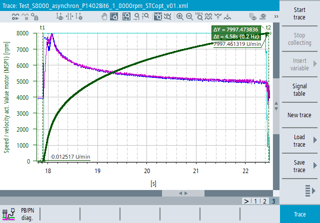

The "Trace" function is an oscilloscope function that supports you when optimizing, troubleshooting and analyzing machines.
The "Trace" widget contains a graph area where the diagrams (signal curves and scales) are displayed with horizontal scrollbars and vertical scrollbars.
Measuring cursors and axis labels are available in the trace diagram. You can zoom and scroll the display via the corresponding context menu or the options in the toolbar with the keyboard, mouse or gestures (touch).
You can use the "Trace" function in real time when you start trace measurement and analyze data directly. Alternatively, you can load the recorded trace session file with the measurement data and analyze it.
Open the function window for trace in the operating area
"Diagnostics > Menu forward key > Trace".
The displayed diagram is a time/value line diagram. The horizontal axis shows time, the vertical axis shows the measured data (in the unit corresponding to the measured signal).
You can configure the color, line width and line style separately for each signal.
The measured values are only connected with horizontal and vertical lines, interpolated (inclined) lines are not used.
You can scroll and zoom in the diagram with the keyboard, mouse and touch gestures. You can also use measuring cursors.
The signal table, context menu and toolbar functions can be used for configuring the graphic display of signal curves and scales.
Trace files from the following sources are supported in XML format when they are loaded into the trace application.
File source (XML) | Loading and visualizing | Loading and using as trace configuration |
|---|---|---|
Analyze MyMachine /SINUMERIK Tuning Center | Yes | Yes |
SINUMERIK Operate | Yes | Yes |
SINUMERIK Operate Commissioning | Yes | Yes |
SinuCom NC | Yes | No |
| Note |
Trace session files created with the SINUMERIK Operate function Trace classic or with SinuCom NC can be loaded in compatibility mode. These configurations cannot be edited and do not provide the full functionality of the trace application. |
Load an existing trace measurement or create a new trace configuration.
Work with signal groups and start the trace recording.
Work with the trace diagram and use the context menu functions for the diagram analysis.
Save your trace configuration.
See also:
Signal table
Creating trace configuration
Loading the trace session file
Trace measurement
Working with the trace diagram
Using context menu functions to analyze diagrams